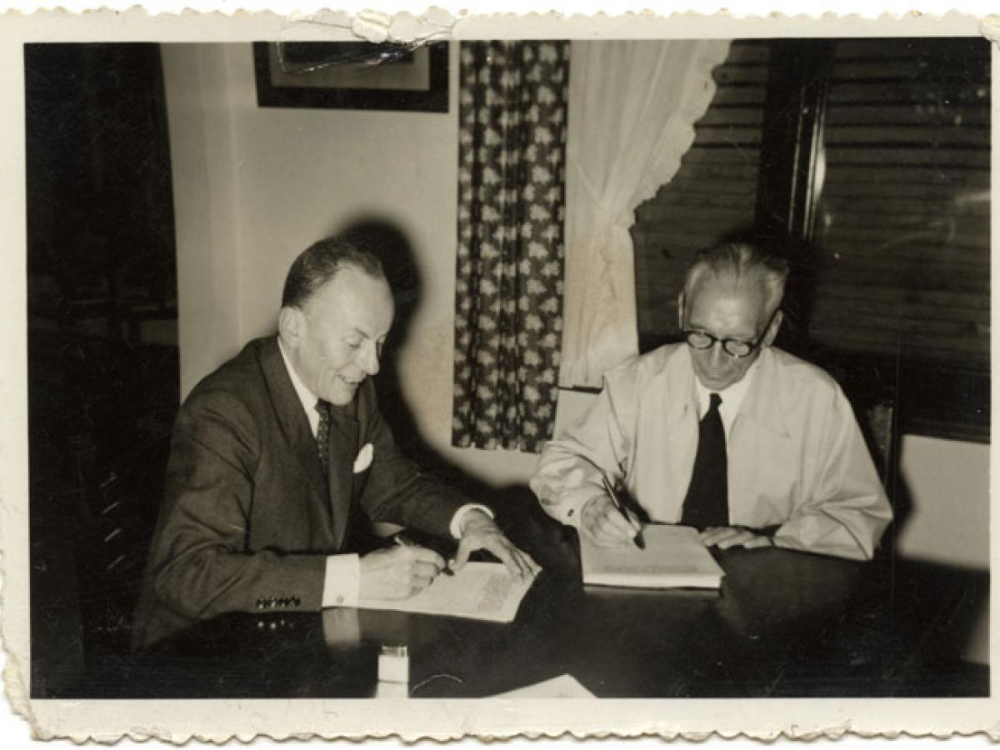

Los resultados de las elecciones presidenciales pueden dar cuenta de las tensiones que generó el
acuerdo y que se fueron acrecentando con el tiempo. En las de 1958, el liberal Alberto Lleras
Camargo obtuvo cerca de un 80% de los votos en contraposición al 20% que recibió su opositor, el
conservador disidente Jorge Leyva.
Lleras Camargo, Alberto
(Orador). (1957). Sobre el Frente Nacional [Discurso]. Bogotá
D.C:
Radiodifusoras de La Voz de Bogotá. Archivo Señal Memoria, HJCK-RLQ-072258-01.

Candidatos Presidenciales
Estos fueron algunos de los candidatos a la presidencia:
El segundo mandato de Alberto Lleras Camargo como presidente de Colombia (1958-1962) se destacó por la
implementación del 'Frente Nacional', un acuerdo que buscaba poner fin a la violencia política y
establecer reformas significativas. Este período de reconciliación nacional y reformas dejó una marca
perdurable en la historia de Colombia.
Lleras Camargo asumió la presidencia en 1958 como el primer
presidente del Frente Nacional. Esta fue una iniciativa política en la que los partidos
tradicionales de Colombia, el Partido Liberal y el Partido Conservador, acordaron alternar
en el poder durante un período de 16 años, con el fin de poner fin a la violencia política y
garantizar la estabilidad política en el país. Durante su mandato, Lleras Camargo trabajó
activamente en la consolidación de este acuerdo y en la reconciliación entre los partidos.
Bajo el liderazgo de Lleras Camargo, se implementaron reformas
políticas significativas. Una de las más destacadas fue la reforma electoral de 1959, que
introdujo cambios en el sistema de votación y garantizó una mayor representación política.
Esta reforma también estableció el voto obligatorio en Colombia.
Durante su segundo mandato, Lleras Camargo promovió políticas
destinadas a impulsar la economía colombiana. Se centró en la inversión en infraestructura,
la modernización del sector agrícola y la promoción de la industrialización. También se
esforzó por mejorar las condiciones de vida de los trabajadores y expandir la seguridad
social.
Lleras Camargo apoyó medidas de reforma agraria con el objetivo de
redistribuir la tierra de manera más equitativa entre los campesinos y promover el
desarrollo rural. Se implementaron programas para la adquisición de tierras y el
mejoramiento de las condiciones de vida en las zonas rurales.
Durante su segundo mandato, Colombia mantuvo relaciones diplomáticas
con otros países de América Latina y participó activamente en organizaciones internacionales
como la Organización de Estados Americanos (OEA). Lleras Camargo continuó siendo un
representante destacado de Colombia en el ámbito internacional.
Lleras Camargo promovió el desarrollo cultural y educativo en
Colombia. Durante su presidencia, se invirtió en la educación pública y se fomentaron
actividades culturales en todo el país.
El segundo mandato de Lleras Camargo fue un período importante en la
historia de Colombia, ya que marcó la transición hacia un sistema político más pacífico y
colaborativo. A pesar de la alternancia en el poder entre los partidos, Lleras Camargo
desempeñó un papel fundamental en la consolidación de la democracia y la estabilidad
política en Colombia.